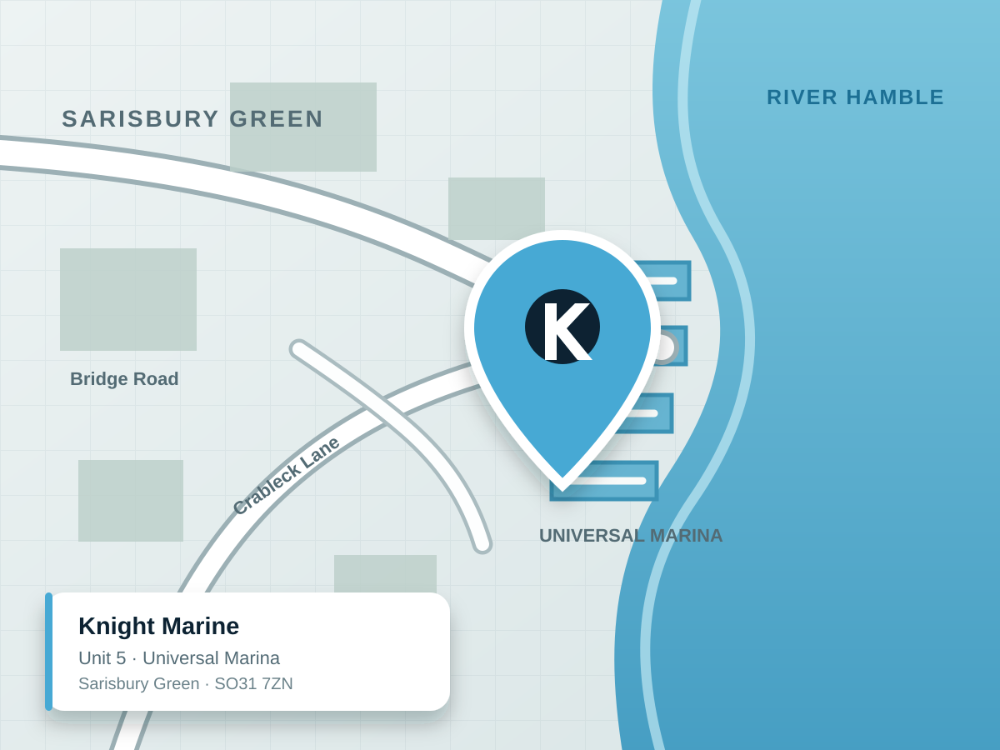

“My batteries keep going flat.”
We can check charging sources, battery health, parasitic loads and system design before recommending replacements.
Electrical diagnosticsHamble · Solent · Southampton
We design, install, upgrade and maintain the electrical and electronic systems that keep your boat running.
Start with what your boat needs
Come to us with a fault, an upgrade plan or a blank sheet. We will assess the boat, explain the options and deliver a properly integrated solution.
What can we solve?
You do not need to know which product to buy before you call. Our team starts with the boat, the problem and how you use it.
We can check charging sources, battery health, parasitic loads and system design before recommending replacements.
Electrical diagnosticsWe can inspect the network, sensors and setup, then calibrate and commission the system on the water.
Calibration & commissioningWe design lithium, solar, inverter and monitoring systems around your real loads and cruising pattern.
Off-grid powerWe coordinate electrical, electronics and refit work so the finished installation works as one joined-up system.
Plan a refitFrom a targeted charging upgrade to a complete lithium and inverter system, Knight Marine designs around your actual onboard loads-not a generic bundle.
Calibration & commissioning
We integrate, calibrate and tune marine electronics on the water so instruments, autopilots, sensors and navigation systems perform as intended.
Systems we know and trust
We specify, install and support proven equipment around your boat, your cruising and the way you use it.
People you can call again
Good equipment is only part of the job. Our team considers access, cable routes, protection, integration, usability and future maintenance-then gives you a clear handover.
From the workshop and the water
Dedicated space for project walk-throughs, system explainers and behind-the-scenes updates from the Knight Marine team.
An equipment explainer from the Knight Marine Tech Day series.
A complete project film showing the people, detail and results behind a major refit.
A straightforward, considered process from the first conversation to the final handover.
We review your boat, existing setup and what you want to improve.
We recommend the right products, upgrades or maintenance plan.
Our team completes the work carefully, cleanly and professionally.
You receive a clear handover and a team you can call again.
“Knight Marine has fitted a wide range of electronics to our boat. They have provided an absolutely first class and price competitive service.”Andy B · Knight Marine customer
Real boats · real installations
Explore documented electronics and refit work already present in the Knight Marine project library-without invented results or anonymous case studies.

Knight MarineUniversal Marina · SO31 7ZNMarine electricians on the River Hamble
Based at Universal Marina in Sarisbury Green, we support owners in Hamble, Southampton and surrounding Solent marinas with marine electrical work, electronics installation, diagnostics and refits.
Knight MarineStart a conversation
Share a few useful details and the Knight Marine team can respond with a clearer next step.
Universal Marina · Sarisbury Green · SO31 7ZN